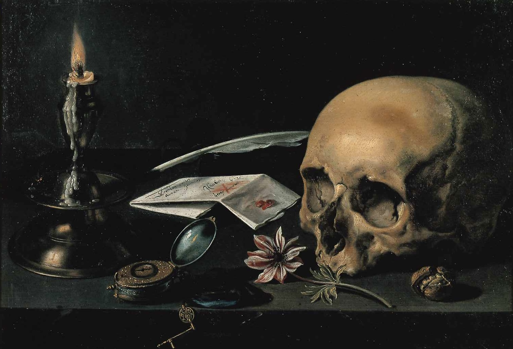

作品名 「ヴァニタス」
花言葉 「はかない恋」「恋の苦しみ」「見放された」「見捨てられた」
アネモネ
「はかない恋」
イチリンソウ属の学名「Anemone（アネモネ）」は、ギリシア語の「anemos（風）」を語源とし、早春のおだやかな風が吹き始めると開花することに由来するといわれます。アネモネの花言葉「はかない恋」「恋の苦しみ」「見捨てられた」「見放された」には、ギリシア神話の悲しい物語が関係しています。春の訪れを告げる西風の神ゼピュロスは、妻である花の女神フローラの侍女のアネモネに恋をしてしまいます。ゼピュロスの感情に気づいたフローラは、嫉妬心からアネモネを神殿から追い出してしまいました。ゼピュロスは、毎日泣き暮らして日に日に弱っていくアネモネを哀れに思い、彼女を花の姿に変えてあげたといいます。
ヴァニタス
ピーテル・クラースゾーン
ピーテル・クラースは、オランダ黄金時代に活躍した画家。ピーテル・クラースの初期の作品は色彩豊かであったが、後年になってもっと落ち着いた色合いに変化していった。ヴァニタスとは「人生の空しさの寓意」を表す静物画であり、豊かさなどを意味するさまざまな静物の中に、人間の死すべき定めの隠喩である頭蓋骨や、あるいは時計やパイプや腐ってゆく果物などを置き、観る者に対して虚栄のはかなさを喚起する意図をもっていた。
| 作品名 | ヴァニタス |
| 作者 | ピーテル・クラースゾーン |
| 制作年 | 1890年 |
| 種類 | 木板・油彩 |
| 寸法 | 39.5cm × 56 cm |
| 所蔵 | フランス・ハルス美術館 |